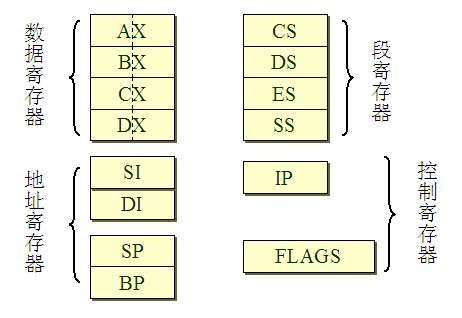
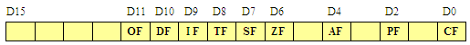
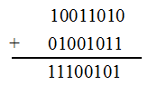
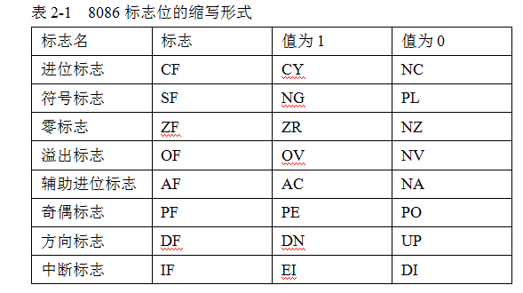

概述：
DOS 及 DEBUG 介绍
8086 寄存器组
8086 寄存器都是 16 位的寄存器，根据用途可分为 4 种类型。分别是数据寄存器、地址寄存器、段寄存器和控制寄存器。
如图所示:

（1）数据寄存器
数据寄存器中每个寄存器又可以分为 2 个 8 位的寄存器。分别为 AH、AL，BH、BL，CH、CL，DH、DL。H 表示高字节（高 8 位）寄存器、L 表示低字节（低 8 位）寄存器。
例如：用 AX 寄存器存放一个字 1234H，表示为 (AX)=1234H，即高字节 12 放在 AH，低字节 34 放在 AL 中。
（2）地址寄存器
地址寄存器包括指针和变址寄存器 SP、BP、SI、DI 四个 16 位寄存器。
顾名思义，它们可用来存放存储器操作数的偏移地址。另外，它们也可以作为通用寄存器用。
（3）段寄存器
8086CPU 有 4 个 16 位的段寄存器，分别是 CS 代码段寄存器、DS 数据段寄存器、ES 附加段寄存器、SS 堆栈段寄存器。
（4）控制寄存器
控制寄存器包括 IP 和 FLAGS（又称为 PSW 程序状态字）两个 16 位寄存器，用于控制程序的执行。
IP 指令指针寄存器，用来存放代码段中的偏移地址，指出当前正在执行指令的下一条指令所在单元的偏移地址。
FLAGS 标志寄存器中的某位代表 CPU 的 1 个标志，表示出 CPU 的某种执行状态。最低位为 D0，最高位为 D15。8086CPU 的标志寄存器共有 9 个标志，分别为 6 个条件码标志和 3 个控制标志。如图：

（1）条件码标志
- CF 进位标志。当指令执行结果的最高位向前有进位时，CF=1，否则 CF=0。
- SF 符号标志。当指令执行结果的最高位（符号位）为负时，SF=1，否则 SF=0。
- ZF 零标志。当指令执行结果为 0 时，ZF=1，结果不为 0 时，ZF=0。
- OF 溢出标志。当指令执行结果有溢出（超出了数的表示范围）时，OF=1，否则 OF=0。
- AF 辅助进位标志。当指令执行结果的第 3 位（半字节）向前有进位时，AF=1，否则 AF=0。
- PF 奇偶标志。当指令执行结果中 1 的个数为偶数个时，PF=1，否则 PF=0。
（2）控制标志
- DF 方向标志。执行串处理指令时，若设置 DF=0，存储单元的地址寄存器的值自动增加，若设置 DF=1，存储单元的地址寄存器的值自动减小。
- IF 中断标志。设置 IF=1，允许 CPU 响应可屏蔽中断，IF=0 则不响应。
- TF 陷阱标志。在 DEBUG 调试时，TF=1，采用单步执行方式，即进入陷阱；TF=0，正常执行程序。
例：两个二进制数相加运算，有关标志位自动发生变化。

根据计算结果可知 CPU 会自动地把标志位设为：CF=0，SF=1，ZF=0，OF=0，PF=0，即无进位，结果为负数，结果不为 0，没有溢出，奇数个 1。
对溢出的判断也可以从简单的角度理解，因为进行运算的二进制数是补码，可看出本题是一个负数和一个正数相加，结果为负数，不溢出。若两个正数相加，结果为负数，或者两个负数相加，结果为正数，那都是溢出了，说明 8 位补码已经表示不了该结果。
小贴士 DEBUG 下的标志位表示
在 DEBUG 调试环境下以字母缩写的形式表示各个标志位的状态。进入 DEBUG 后，用 R 命令查看寄存器状态时，可以看到除了陷阱标志以外的标志位的状态。
如表 2-1 所示：

小贴士 数的补码运算
在计算机中，对带符号数可用真值和机器数两个概念表示。
真值，就是带有“+”、“-”号的实际数值；所谓机器数，则是把“+”、“-”符号数值化（0、1）后所得到的计算机实际能表示的数。
机器数有三种码表示，分别是原码、反码和补码。汇编语言中，数都是以补码的形式表示的，因此必须掌握数的补码表示和补码的运算。这三种码的定义如下：
- 原码。原码将最高位作为符号位，正数为 0，负数为 1，其余 7 位作为数值位。
- 反码。正数的反码与正数的原码一样。而求负数的反码时，符号位为 1，数值位在原码的基础上求反。
- 补码。正数的补码与正数的原码一样。求负数的补码时，符号位为 1，数值位在原码的基础上求反加 1。
例：十进制数 +5 和 -5 分别表示成二进制数原码、反码和补码。
[+5]原 = [+5]反 = [+5]补 = 00000101B
[-5]原 = 10000101B
[-5]反 = 11111010B
[-5]补 = 11111011B